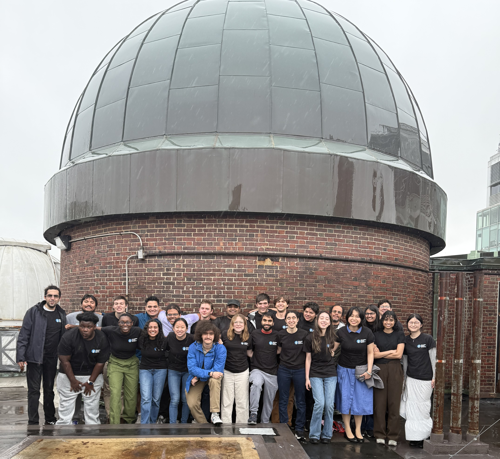
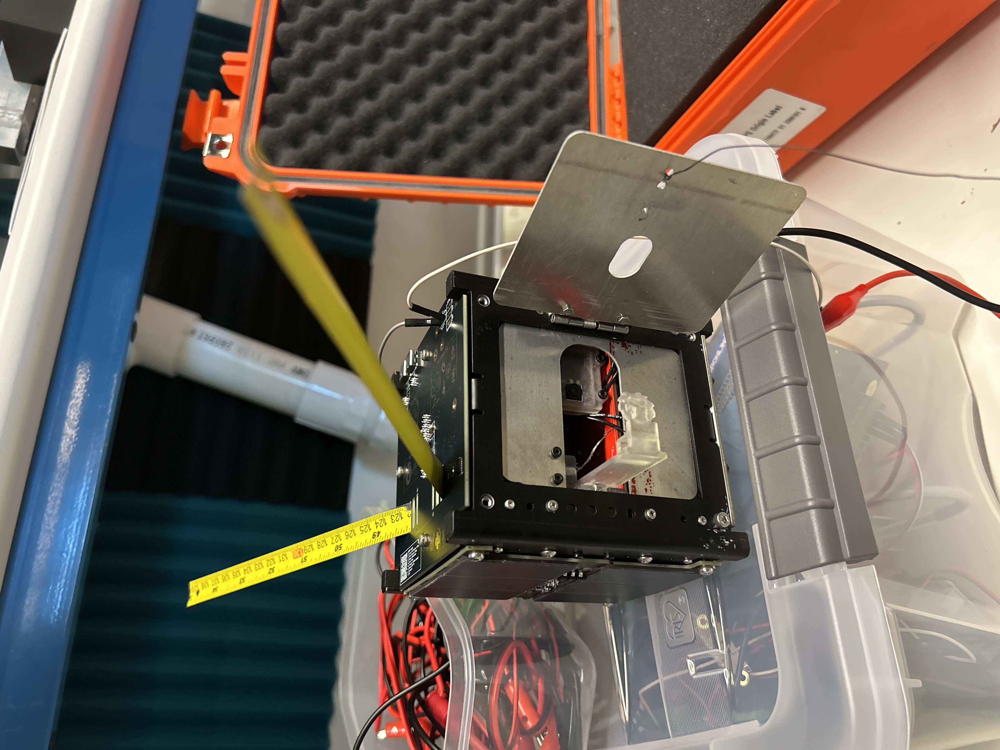
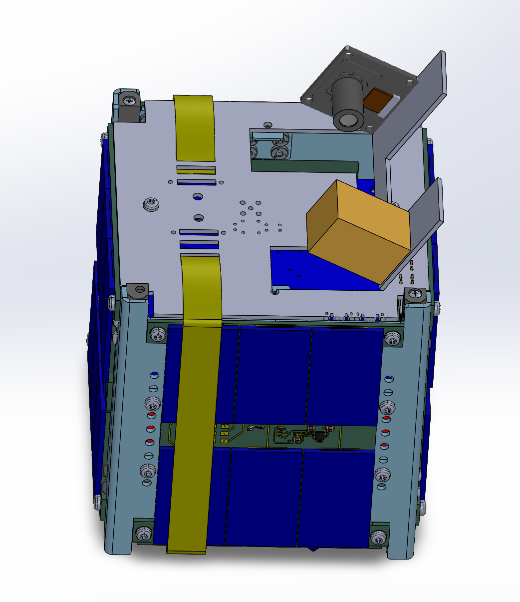
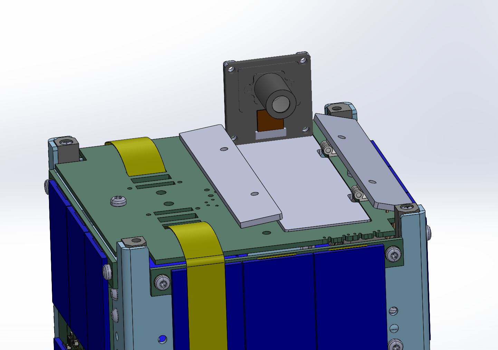
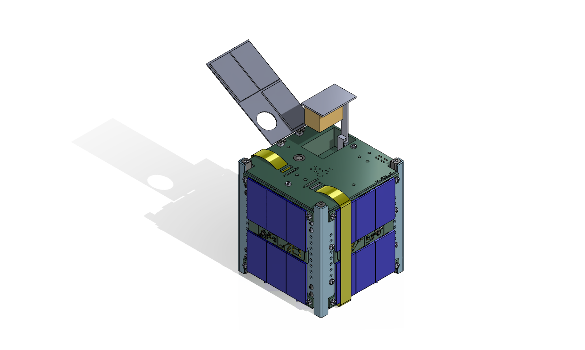
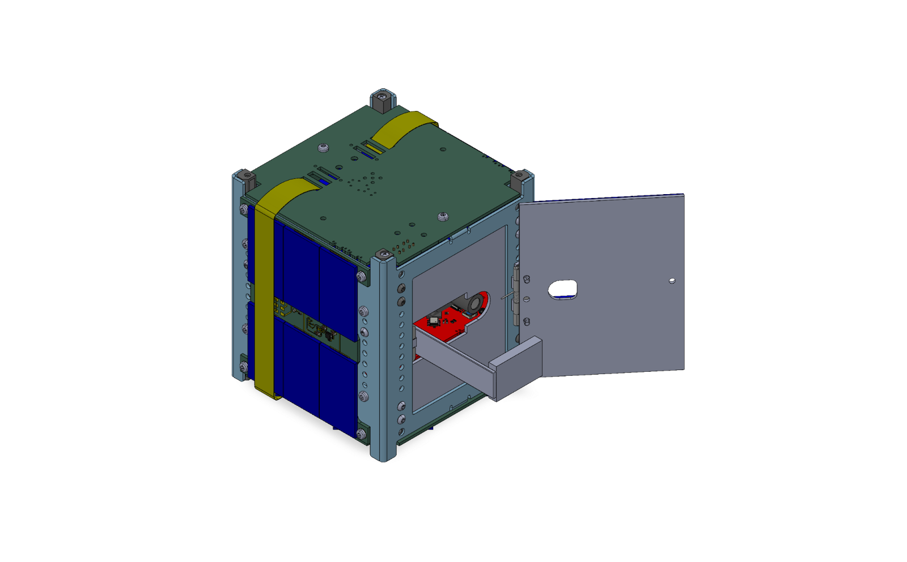

As mission lead for Columbia University’s CubeSat program, I oversee the end-to-end development of both our 1U and 6U spacecraft, coordinating structural, thermal, electrical, and software integration through flight delivery.
Previously, as Structures & Thermal subteam lead for the 1U mission, I designed and built the payload deployment mechanism—taking it from early CAD concepts through aluminum machining, prototyping, and qualification testing to ensure reliable burn-wire deployment within strict CubeSat volume and safety constraints.

The 1U CubeSat (launching April 2026) is a fully flight-approved ISS-deployed mission designed to capture Earth imagery while training students in spacecraft systems engineering.
I led cross-subsystem integration to ensure mechanical packaging, wiring harness routing, camera alignment, and board clearances all met deployer constraints, while maintaining compliance with mass limits and ISS safety requirements.




The deployable payload mechanism underwent multiple prototype iterations to reduce manufacturing complexity, eliminate failure modes, and ensure consistent deployment under vibration and thermal cycling.
I machined final aluminum components, validated fit within the CubeSat envelope, and supported vibration qualification testing.
Following final integration and hardware/software checkouts in Houston with Voyager Space, we delivered the flight-ready spacecraft for launch in April 2026.

With the 1U CubeSat delivered for launch, our team is now directing full attention toward our next mission: a 6U spacecraft built around an optical spectrograph payload.
This mission will observe distant galaxies and measure velocity structure in H-alpha gas within the circumgalactic medium, requiring extremely tight pointing stability and careful thermal control to prevent distortion across the instrument’s optical path. The payload drives dramatic thermal gradient constraints as well as strict structural and pointing requirements.
As mission lead, I oversee the systems-level engineering effort across mechanical, electrical, and software teams—maintaining spacecraft power, mass, data, and volume budgets while guiding integration decisions and qualification planning. In parallel, I lead proposal writing, sponsor outreach, and descoping trade studies to keep the mission technically feasible within our funding and launch constraints.